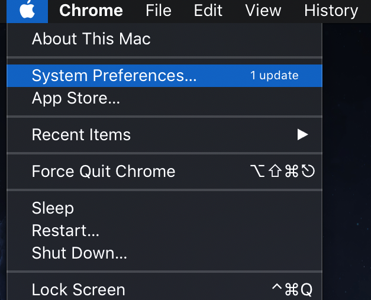
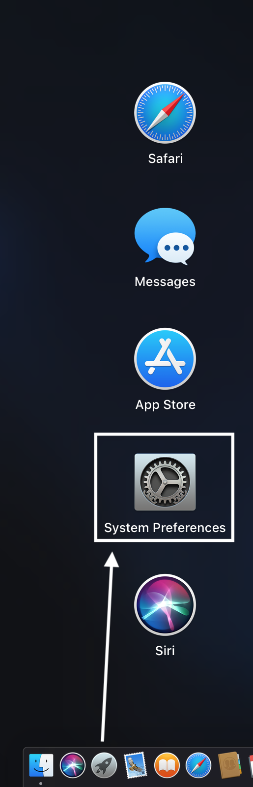
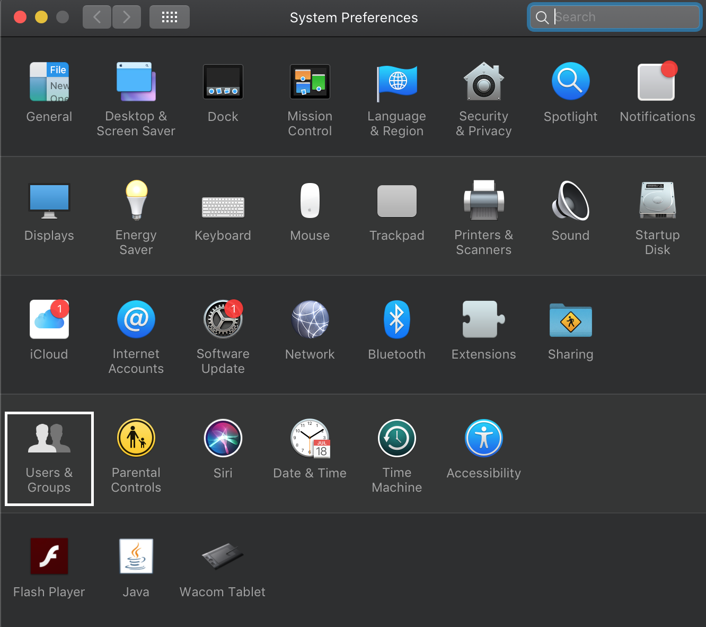
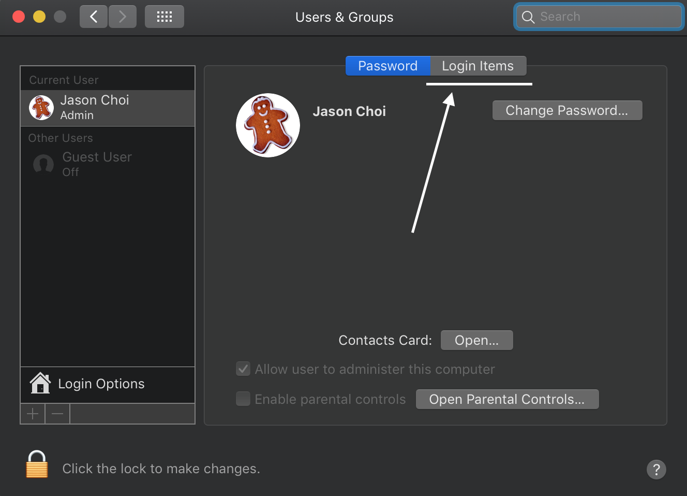
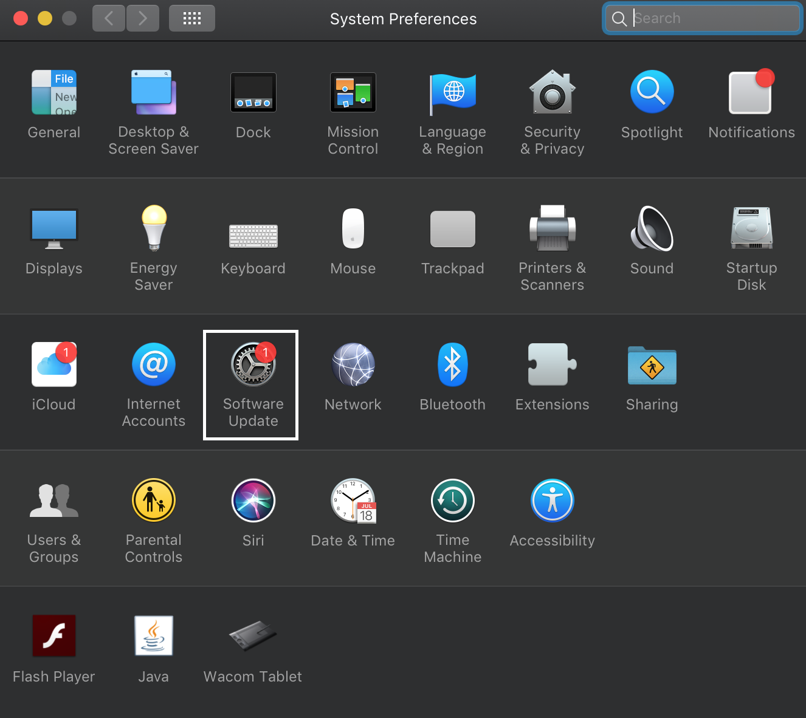
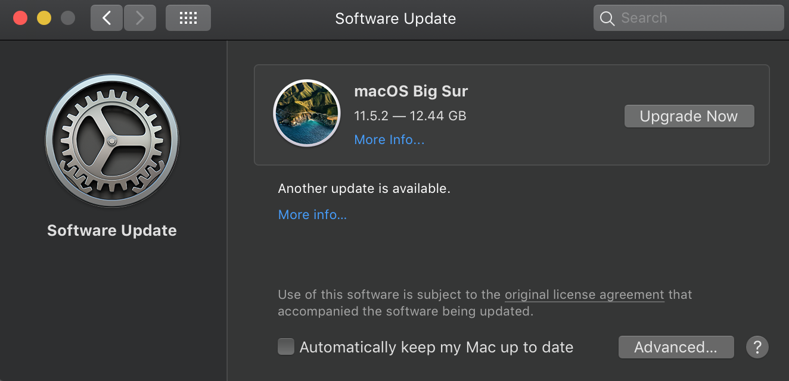
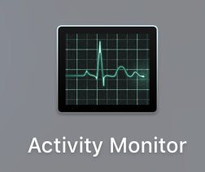
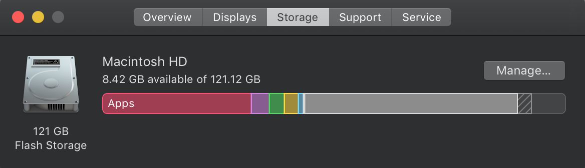

MacOS, although unified in style and structure across versions and hardware, diverges significantly in design from the other operating systems. Here are some guidelines to improve an Apple device's performance:
Improving Start Up Speed
Similar to the other operating systems, the startup performance for Macintosh devices depends primarily on the number of programs the computer starts while starting up.
Steps for changing startup setup options:
- Open System Preferences from the Apple menu, or navigate to the System Preferences logo from the Launchpad:  
- Click on the "Users and Groups" icon: 
- Go to the Login Items tab: 
You will see a queue of programs that the computer boots up first on launch. To minimize bootup times, simply remove all unnecessary programs from this queue.
Maintaining device performance
Below are tips on improving the speed of your Macintosh device:
- System Updates
- Navigate to the Software Update icon in the System Preferences panel: 
- The device will check for major updates to the operating system. If one is available, the panel will prompt you to update. Updating your operating system results in improvements to security protocols and computational efficiency. 
- Check your Memory Usage
- In your Launchpad, find the Activity Monitor icon. This app tells you how programs are using the computer CPU, RAM, energy, and network. It is good practice to scrutinize each CPU and memory process, and to disable unnecessary and suspicious programs from this panel. 
Cleaning up system storage
Below are tips on cleaning up storage space on your Macintosh device
- Built-in Storage Management
- Navigate via this path: About this Mac... > Storage > Manage...
- The panel will now show how your computer storage is distributed in detail. Notice how some storage is used for the system itself and is inaccessible. This internal storage manager is the most convenient way to thoroughly reduce clutter.
-

Keeping your device secure
For Macbooks in particular, these security measures are recommended:
- Update OSX
- Keep your system updated to avoid the vulnerabilities of previous versions.
- Avoid Public Wifi Networks
- Public Wifi networks are susceptible to multiple threats, including outdated security systems, malicious ports, and data collection. Do not use public networks if it can be helped.
- Investigate the hidden Library Folder
- Navigate to: Finder > Go. While holding down the Option key, a Library folder will appear. This 'Hidden Library' contains residual files for every program used on your device. Investigate the contents of this folder, but take caution when deleting files, as your computer's operating system uses this folder for program storage too.